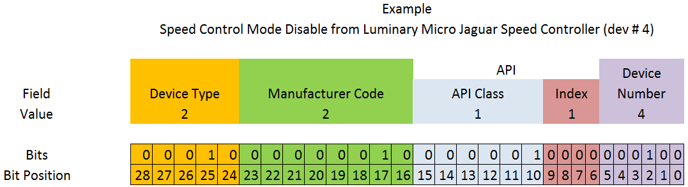

FRC CAN Device Specifications
This document seeks to describe the basic functions of the current FRC® CAN system and the requirements for any new CAN devices seeking to work with the system.
Addressing
FRC CAN nodes assign arbitration IDs based on a pre-defined scheme that breaks the ID into 5 components:
Device Type
This is a 5-bit value describing the type of device being addressed. A
table of currently assigned device types can be found below. If you wish
to have a new device type assigned from the Reserved pool, please
submit a request to FIRST.
Device Types |
|
|---|---|
Broadcast Messages |
0 |
Robot Controller |
1 |
Motor Controller |
2 |
Relay Controller |
3 |
Gyro Sensor |
4 |
Accelerometer |
5 |
Ultrasonic Sensor |
6 |
Gear Tooth Sensor |
7 |
Power Distribution Module |
8 |
Pneumatics Controller |
9 |
Miscellaneous |
10 |
IO Breakout |
11 |
Reserved |
12-30 |
Firmware Update |
31 |
Manufacturer
This is an 8-bit value indicating the manufacturer of the CAN device.
Currently assigned values can be found in the table below. If you wish
to have a manufacturer ID assigned from the Reservedpool, please
submit a request to FIRST.
Manufacturer |
|
|---|---|
Broadcast |
0 |
NI |
1 |
Luminary Micro |
2 |
DEKA |
3 |
CTR Electronics |
4 |
REV Robotics |
5 |
Grapple |
6 |
MindSensors |
7 |
Team Use |
8 |
Kauai Labs |
9 |
Copperforge |
10 |
Playing With Fusion |
11 |
Studica |
12 |
The Thrifty Bot |
13 |
Reserved |
14-255 |
API/Message Identifier
The API or Message Identifier is a 10-bit value that identifies a
particular command or message type. These identifiers are unique for
each Manufacturer + Device Type combination (so an API identifier that
may be a “Voltage Set” for a Luminary Micro Motor Controller may be a
“Status Get” for a CTR Electronics Motor Controller or Current Get
for a CTR Power Distribution Module).
The Message identifier is further broken down into 2 sub-fields: the 6-bit API Class and the 4-bit API Index.
API Class
The API Class is a 6-bit identifier for an API grouping. Similar messages are grouped into a single API Class. An example of the API Classes for the Jaguar Motor Controller is shown in the table below.
API Class |
|
|---|---|
Voltage Control Mode |
0 |
Speed Control Mode |
1 |
Voltage Compensation Mode |
2 |
Position Control Mode |
3 |
Current Control Mode |
4 |
Status |
5 |
Periodic Status |
6 |
Configuration |
7 |
Ack |
8 |
API Index
The API Index is a 4-bit identifier for a particular message within an API Class. An example of the API Index values for the Jaguar Motor Controller Speed Control API Class is shown in the table below.
API Index |
|
|---|---|
Enable Control |
0 |
Disable Control |
1 |
Set Setpoint |
2 |
P Constant |
3 |
I Constant |
4 |
D Constant |
5 |
Set Reference |
6 |
Trusted Enable |
7 |
Trusted Set No Ack |
8 |
Trusted Set Setpoint No Ack |
10 |
Set Setpoint No Ack |
11 |
Device Number
Device Number is a 6-bit quantity indicating the number of the device of a particular type. Devices should default to device ID 0 to match other components of the FRC Control System. Device 0x3F may be reserved for device specific broadcast messages.
Protected Frames
FRC CAN Nodes which implement actuator control capability (motor controllers, relays, pneumatics controllers, etc.) must implement a way to verify that the robot is enabled and that commands originate with the main robot controller (i.e. the roboRIO).
Broadcast Messages
Broadcast messages are messages sent to all nodes by setting the device type and manufacturer fields to 0. The API Class for broadcast messages is 0. The currently defined broadcast messages are shown in the table below:
Description |
|
|---|---|
Disable |
0 |
System Halt |
1 |
System Reset |
2 |
Device Assign |
3 |
Device Query |
4 |
Heartbeat |
5 |
Sync |
6 |
Update |
7 |
Firmware Version |
8 |
Enumerate |
9 |
System Resume |
10 |
Devices should disable immediately when receiving the Disable message (arbID 0). Implementation of other broadcast messages is optional.
Requirements for FRC CAN Nodes
For CAN Nodes to be accepted for use in the FRC System, they must:
Communicate using Arbitration IDs which match the prescribed FRC format:
A valid, issued CAN Device Type (per Table 1 - CAN Device Types)
A valid, issued Manufacturer ID (per Table 2 - CAN Manufacturer Codes)
API Class(es) and Index(s) assigned and documented by the device manufacturer
A user selectable device number if multiple units of the device type are intended to co-exist on the same network.
Support the minimum Broadcast message requirements as detailed in the Broadcast Messages section.
If controlling actuators, utilize a scheme to assure that the robot is issuing commands, is enabled, and is still present.
Provide software library support for LabVIEW, C++, and Java or arrange with FIRST® or FIRST’s Control System Partners to provide such interfaces.
Universal Heartbeat
The roboRIO provides a universal CAN heartbeat that any device on the bus can listen and react to. This heartbeat is sent every 20ms. The heartbeat has a full CAN ID of 0x01011840 (which is the NI Manufacturer ID, RobotController type, Device ID 0 and API ID 0x062). It is an 8 byte CAN packet. The important byte in here is byte 5 (index 4). The layout is the following bitfield.
Description |
Width |
|---|---|
RedAlliance |
1 |
Enabled |
1 |
Autonomous |
1 |
Test |
1 |
WatchdogEnabled |
1 |
Reserved |
3 |
The flag to watch for is WatchdogEnabled. If that flag is set, that means motor controllers are enabled.
If 100ms has passed since this packet was received, the robot program can be considered hung, and devices should act as if the robot has been disabled.